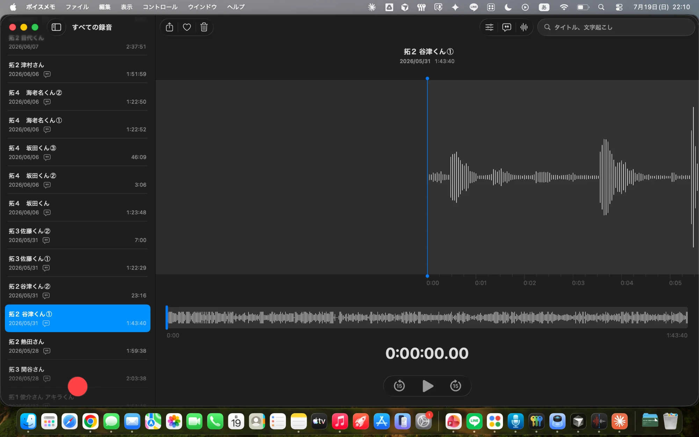

← お知らせ一覧に戻る
INDIA
講義
大久保先生がデリー大学にて
2つの特別講義を行いました
2026.07

大久保先生 ／ University of Delhi にて
あんたがおらなの教育責任者・大久保俊輝先生が、
インドのデリー大学（University of Delhi）にて2つの特別講義を行いました。
教授・大学院生を対象とした講座と、一般学生を対象とした講座の、計230名が受講しました。
①
Realizing a Symbiotic Society through Action and Morality
アクション・モラルで共生社会の実現を
対象：教授・大学院生 ／ 参加者 90名
②
A Suggestion for Multicultural Understanding
多文化理解のための一提言
対象：学生 ／ 参加者 140名
言葉や文化の壁を越えて、子どもの幸福と親・地域・世界のあり方を問い直す。
黒板に書かれた言葉は、インドの学生・研究者たちにも深く響きました。
現地の参加者からは授業後も質問や対話が続き、
国際的な教育の視点から大きな反響をいただきました。